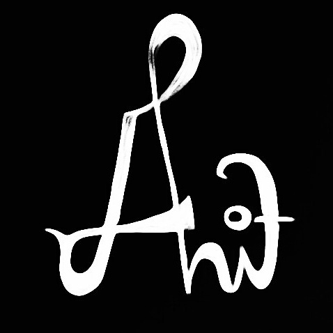

About
Web ini diproduksi untuk memenuhi tugas liburan WebDev yang akan jatuh deadline pada 5 Februari 2020.
Web ini diproduksi oleh Adiyatma Pratama W. dari Fakultas Rekayasa Industri Jurusan Teknik Industri kelas TI4404.
Konsep yang ingin dibawa dalam web ini sebenarnya adalah "private diary", maksudnya adalah web ini ditujukan
sebagai museum dari kisah-kisah yang telah dilalui sang penulis. Tapi karena keterbatasan ilmu, jadi diperbagusnya
nanti saja ya hehe. Berikut adalah foto diri penulis.
